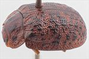
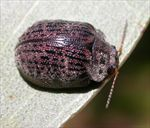
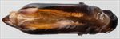
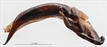
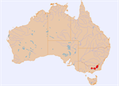

Click on images to enlarge
![Male, Happy Jacks, S.E. New South Wales [QM]](assets/image/Ta99/Ta99_AQM-095_SM.jpg){kind=link}

Male, Happy Jacks, S.E. New South Wales [QM]


Female, Dead Horse Gap, Thredbo, S.E. New South Wales


Aedeagus, dorsal view (Dead Horse Gap, Thredbo, S.E. New South Wales)


Aedeagus, lateral view (Dead Horse Gap, Thredbo, S.E. New South Wales)


Distribution
Name
Trachymela sp. Ta99
Reference specimen
2004-713b, Dead Horse Gap, Thredbo, SE New South Wales.
Adult Description
Length: ♂ 10.3 mm (n=2), ♀ 9.5–10.7 mm (n=11).
Colouration:
- Head: mid- to dark-brown, almost always with black areas, these always include the fronto-clypeal suture with usually a black triangular area with its base at the centre of suture extending posteriorly in the middle of the frons, often the posterior half, less often all of clypeus is black, a narrow rim around the anterior of eyes often black, rarely, the whole head black; labrum usually yellowish-brown, less often darker, even black; mandibles black, less often reddish-brown with black tips; antennomeres 1–4 light to mid-brown, 5–7 grading towards dark-brown or black, 8–11 dark-brown or black.
- Pronotum: brown, concolorous with head, with an angular or almost circular black macula on either side of anterior half of centre and a smaller circular black macula behind each eye, less often, posterior margin of disc is black.
- Scutellum: brown, concolorous with pronotum, bordered broadly in black or, less often, completely black.
- Elytra: brown, concolorous with pronotum, with prominent often nitid, black smooth pustules studding the whole surface, many of these are aligned in longitudinal series with elevated, black ridges frequently joining pustules in adjacent rows, punctures are concolorous with or noticeably darker than interstices, humeral callus black or, very rarely, concolorous with surrounds.
- Venter & Legs: head and prosternum black, mesoventrite and metaventrite black away from lateral extremes where they are often slightly paler, abdominal ventrites dark reddish-brown, rarely tending to black, legs dark reddish-brown, femur sometimes darker, inside surface of elytral epipleura black.
- Cuticular Wax: a light scattering of brown between the verrucae.
Morphology:
- Body shape: rather flattened (H/L: ♂ 0.38–0.40, ♀ 0.39–0.45), greatest height viewed laterally is at around middle of elytral margin.
- Head: punctures variable in size (pd ≈ 1.5–3× ef), usually evenly and densely distributed, sometimes surface very rugulose with punctures obscure, a small more lightly punctured area sometimes present at centre rear. Antennae moderately long (AL/BL: ♂ 42–43%, ♀ 38–41%), filiform.
- Pronotum: almost evenly curved transversely over discal section, foveal depression variable, often deep and well defined, less often shallow, sometimes with an almost round elevation near middle, marginal area often prominently explanate, puncturation clearly impressed, relatively fine (similar in size or slightly smaller than those on head), mostly evenly and moderately densely distributed in discal area, with clumps of 3 or 4 punctures sometimes aligning into closely spaced linear groups, becoming coarser and more uneven from foveal depression to lateral margins, interstices smooth and nitid but quite uneven in discal area. Front margins join lateral margins in a smoothly rounded right-angle, with lateral margin initially straight before curving smoothly and gradually towards rear margin.
- Scutellum: smooth and unpunctured.
- Elytra: surface evenly curved transversely, lightly curved longitudinally in anterior half, then more strongly curved, a distinct but shallow depression extends across surface just in front of middle, punctures large and distinct and relatively evenly distributed between the prominent verrucae, individual verrucae moderate in size (2–3 pd), roughly round and mostly aligned in longitudinal series, often several adjacent verrucae joined to form smooth longitudinal ridges, these being most prevalent in area between scutellum and humeral callus and in the posterior third of disc, a number of transverse elevated thickened interstices connect verrucae in adjacent rows, 2–4 relatively large elevated pustules are present in and along marginal area between humeral callus and just past middle, posterior third of marginal area prominently concave, posterior third of elytral suture carinate, surface discontinuous under humeral callus. Vertical extension of epipleura small (HCE/PW = 0.28–0.29).
- Venter: prosternum black, prosternal process almost parallel-sided, lightly closed anteriorly, long and short setae scattered over prosternal process and mesoventrite, one or, more often, 2–4 setae on anterior, median and posterior trochanters; front edge of metaventrite beveled, truncate; inner edge of posterior of epipleurae lacking setae.
Male Genitalia (Aedeagus):
- Dimensions: moderately long (LPE/BL: 26–29%).
- Dorsal view: shaft almost parallel-sided initially then broadening very slightly at level of ostium before sides converge towards apex, the convergence is more rapid in the first segment, then becomes more gradual to form a long, relatively thin triangular apical section that includes anterior portion of ostium and spatula, dorsal surface lightly sclerotized with dorso-median channel very faint and short, dorsolateral channels moderately long; tip very small, ostium moderately long, roughly triangular in shape, dorsal ostial processes do not extend to apical edge.
- Lateral view: shaft curved at about 45° near basal sulcus, ventral surface then quite straight until about 15% of distance from apex, where it curves downwards noticeably and becomes thinner towards tip, tip deflexed.
Immature Stages
Unknown.
Similar species
- Ta22: distribution overlaps that of Ta99; also has similarly large, discrete elytral verrucae, though the form and arrangement of these are subtly different in the two species. In Ta99, they tend to be somewhat smaller and often arranged in longitudinal series, whereas those in Ta22 often align transversely just behind antero-median depression. Individuals of Ta22 are always smaller than those of Ta99 and have only one long seta on each of their trochanters.
Notes
- Distribution & Abundance: This is a large species from the alpine areas of southern New South Wales and eastern Victoria. 11 of the 13 specimens of Ta99 available for study are females.
- Host Associations: Found on the snow gum, Eucalyptus pauciflora.
Copyright © 2026. All rights reserved.